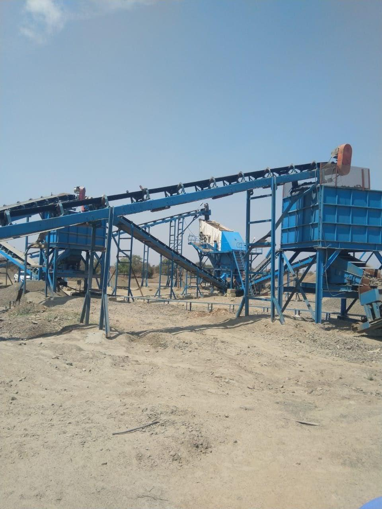
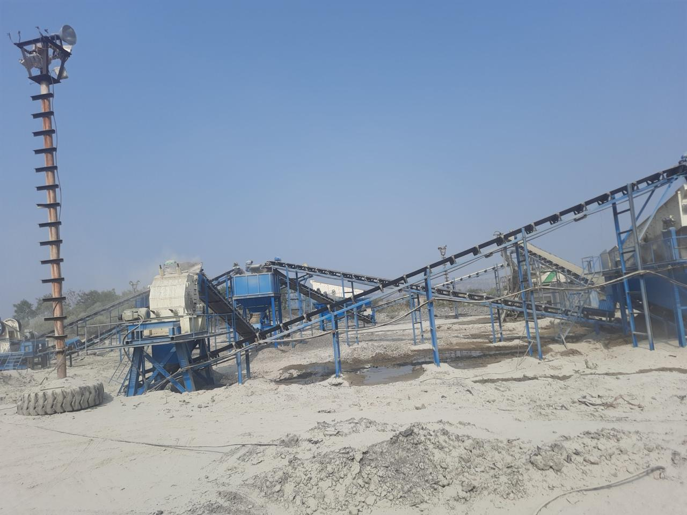
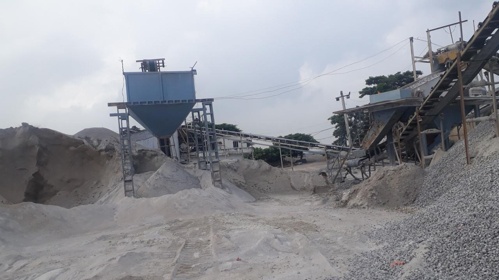

Industries We Serve

Mining Industry
S R ENGG WORKS delivers heavy-duty, reliable crushing and screening solutions designed for the demanding conditions of the mining industry. Our plants are engineered for high throughput, durability, and continuous operation.
Key Solutions for Mining:
- High-capacity Jaw Crushers for primary breaking.
- Robust Cone Crushers for secondary and tertiary crushing.
- Heavy-duty Vibrating Screens for precise sizing.
- Durable Grizzly Feeders for pre-screening and feeding.
- Efficient Conveyor Systems for material transport.

Construction & Infrastructure
We provide comprehensive solutions for the construction and infrastructure sectors, producing high-quality aggregates and manufactured sand (M-Sand) essential for roads, bridges, buildings, and large-scale projects.
Key Solutions for Construction:
- Versatile Jaw Crushers and Cone Crushers.
- VSI/HSI Crushers for superior M-Sand and aggregate shaping.
- Multi-deck Vibrating Screens for accurate gradation.
- Mobile Crushing & Screening Units for site flexibility.
- Advanced Control Panels for plant automation.

Recycling (Construction & Demolition Waste)
S R ENGG WORKS is committed to sustainability by offering innovative C&D waste recycling plants. Our systems efficiently process debris, converting it into valuable resources like recycled aggregates and sand.
Key Solutions for Recycling:
- Integrated C&D Recycling Units.
- Durable Jaw Crushers adapted for C&D materials.
- Screening solutions for separating recycled products.
- Hoppers and Conveyors for material handling.
- Optional Trommel Screens and metal separators.

Sand Processing & Manufacturing
We specialize in equipment for manufacturing high-quality sand, including M-Sand for construction and specialized dried sand for foundries, glass manufacturing, and brick making.
Key Solutions for Sand Processing:
- VSI/HSI Crushers for producing cubical M-Sand.
- Efficient Sand Dryers (LPG/Gas/Diesel fired) for moisture control.
- Vibrating Screens for precise sand classification.
- Sand Washing Plants (Spiral Washers).
- Silos for storing processed sand.
Looking for industry-specific solutions?
Our engineering team can design and deliver equipment tailored to your industry's exact needs.